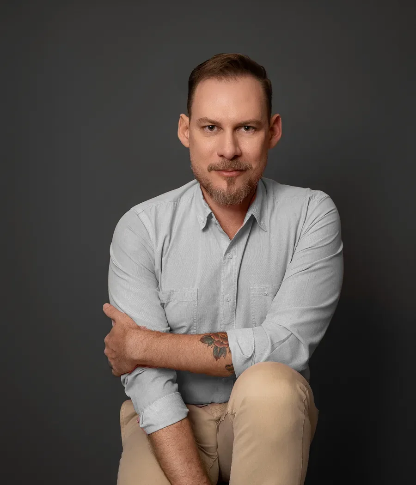

TV · Rádio · Digital
Zezo Aguirre
Analista de Promo na TV Centro América · Professor de inglês
Comunicação que vira campanha, evento e conversa. Na TV e em inglês.
20+anos ensinando inglês
3anos na TV Centro América
2,7 milseguidores no Instagram
UNIVAGformado em Publicidade
O que eu façoComo podemos trabalhar juntos
Promo e campanhas
Planejamento e execução de campanhas promocionais na TV Centro América, com peças on-air e digitais alinhadas à identidade da emissora.
- Chamadas e promos
- Vídeos institucionais
- On-air · Digital
- Métricas
Eventos
Criação, orçamento e execução de eventos e ações de engajamento com a comunidade.
- Planejamento
- Orçamento
- Engajamento
Inglês personalizado
Mais do que só mais um professor de inglês: aulas pensadas para a necessidade de cada aluno, para você se comunicar com segurança no mundo.
- Aulas particulares
- Conversação
- Tradução
TrajetóriaPor onde passei
2025
TV Centro AméricaAnalista de Promo · Cuiabá, MT
2023
TV Centro AméricaAnalista de eventos
2020
UNIVAGBacharelado em Publicidade e Propaganda
2019
English TeacherProfessor de inglês autônomo, aulas personalizadas e remotas
2003
FiskProfessor de inglês por quase 21 anos · coordenador em Rio Branco (AC) em 2011